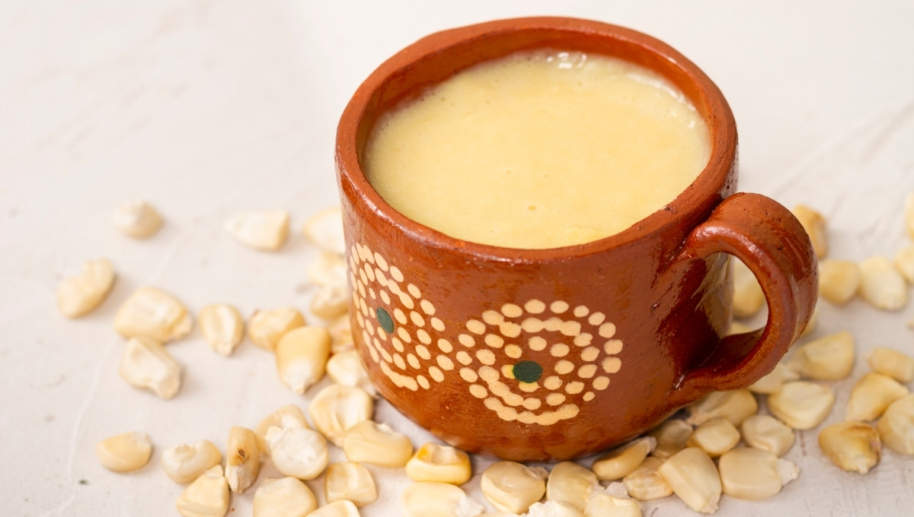

Comidas tradicionales del Hanal Pixán en Campeche
Mucbipollo
Uno de los platillos más representativos es el Mucbipollo (también llamado “pib”): un tamal de gran tamaño elaborado con masa de maíz, relleno de guiso de pollo o cerdo (a veces pavo), envuelto en hojas de plátano y cocido bajo tierra sobre piedras calientes.
Dulces y Frutas Tradicionales
También se ofrecen dulces y frutas tradicionales en los altares, por ejemplo: calabaza dulce, zapotitos, nance, yuca, atole de maíz, frutas como naranja o mandarina, jícama, etc.
Bebidas tradicionales del Hanal Pixán
Balché
Ésta es una bebida prehispánica de los mayas que consideraban, tenía propiedades físicas y espirituales, las cuales ayudaban a conectar con las deidades.
Tan-chucúa o Tanchuca
Bebida tradicional maya similar a un atole o
champurrado.
Según la historia, el tanchuca solo podían beberla los emperadores,
sacerdotes y personas de altas jerarquías.
Platillos tradicionales del Hanal Pixán
| Platillo | Descripción | Ingredientes principales | Región donde más se consume | Fecha asociada |
|---|---|---|---|---|
|
Mucbipollo / Pib
|
Tamal grande tradicionalmente cocido bajo tierra | Masa de maíz, pollo o cerdo, hoja de plátano | Campeche, Yucatán | 1–2 de noviembre |
|
Dulce de Calabaza
|
Postre tradicional preparado para las ánimas | Calabaza, piloncillo | Península de Yucatán | Octubre–noviembre |
|
Nance en Almíbar
|
Dulce típico servido como ofrenda | Nance, azúcar | Campeche | Noviembre |
|
Atole Nuevo

|
Bebida ceremonial ofrecida a las almas | Maíz nuevo, agua | Zonas mayas rurales | 31 de octubre – 2 de noviembre |